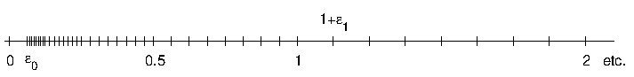

floats/concepts
example (intro)
decimal
\begin{align*} 0.3721 &= 10^{0}\cdot \left( \frac{3}{10}+\frac{7}{10^2}+\frac{2}{10^3}+\frac{1}{10^4}\right) \\ 21.65 &= 10^2 \cdot 0.2165 =10^2 \cdot \left( \frac{2}{10}+\frac{1}{10^2}+\frac{6}{10^3}+\frac{5}{10^4}\right) \\ \frac{1}{3} &= 0.3333333\ldots = 10^{0}\cdot 0.\overline{3} \\ \pi &= 3.141592\ldots=10^{1}\cdot 0.3141592\ldots \\ \end{align*}
binary
\begin{align*} 0.1101 &= 2^{0} \cdot \left( \frac{1}{2}+\frac{1}{2^2}+\frac {0}{2^3}+\frac{1}{2^4}\right) \\ 0.001011 &= 2^{-2} \cdot 0.1011 \\ \frac{1}{3} &= 0.010101\ldots = 2^{-1}\cdot 0.\overline{10} \\ \pi &= 11.0010010000\ldots=2^{2}\cdot 0.110010010000\ldots \\ \end{align*}
definitions
The form of the nonzero floating point numbers:
\pm a^k \cdot 0.m_1\ldots m_t
where
- a>1 integer, the
baseorradixof the system - t>1 integer, the length of the
mantissa, the number of digits used in the fractional part - k_-\leq k\leq k_+ integers, k is the
characteristic, usually k_-<0 and k_+>0, they are fixed. - 0\leq m_i\leq a-1 integers, for i=1,\ldots,t
- if m_1>0 then the number is called normalized
- for brevity the normalized modifier is often omitted
- 0 is not a normalized number!
- for a fixed a,k_{-},k_{+},t the set of normalized numbers is called a floating point system.
- this set will be denoted by \{a,k_{-},k_{+},t\}
properties
Consider the floating point system {\cal F}=\{a,k_{-},k_{+},t\}
- the form of 1 is a^{1}\cdot 0.10\ldots 0
- also 1=a^{2}\cdot 0.010\ldots 0 but this form is not normalized. (unique representation)
- the largest positive number in \cal F is a^{k_{+}}\cdot 0.(a-1)\ldots (a-1)=a^{k_{+}}\cdot(1-a^{-t})
- it is denoted by M_{\infty}
- the smallest positive number in \cal F is a^{k_{-}}\cdot 0.10\ldots 0=a^{k_{-}-1}
- it is denoted by \varepsilon_{0}
- the right neighbour of 1 is a^{1}\cdot 0.10\ldots 01=1+a^{1-t}
- it is denoted by 1_{+}
- the number \varepsilon_{1}=a^{1-t} is the machine epsilon (of \cal F)
- the left neighbour of 1 is a^{0}\cdot 0.(a-1)\ldots (a-1)=1-a^{-t}
- it is denoted by 1_{-}
- note that the two neighbours are in different distance (it is true for all powers of a)
- if x=a^{k}\cdot 0.x_{1}\ldots x_{t}, then x_{+}=x+a^{k-t}
- a^{k-t} is the stepsize for the characteristic k
- if k_{+}>t then the stepsize can be larger than 1
- not all integers are floating point numbers from the interval [-M_{\infty},M_{\infty}]!
example (figure)
- the pictorial representation floating point system
\{a=2,t=4,k_{-}=-3,k_{+}=2\}

example (table)
- all elements of the floating point system
\{a=2,t=4,k_{-}=-3,k_{+}=2\}
\def\arraystretch{1.5} \begin{array}{|c|c|c|c|c|c|c|} \hline &k=-3&k=-2&k=-1&k=0&k=1&k=2\\ \hline 0.1000&\frac{8}{128}&\frac{8}{64}&\frac{8}{32}&\frac{8}{16}&\frac{8}{8}&\frac{8}{4}\\ \hline 0.1001&\frac{9}{128}&\frac{9}{64}&\frac{9}{32}&\frac{9}{16}&\frac{9}{8}&\frac{9}{4}\\ \hline 0.1010&\frac{10}{128}&\frac{10}{64}&\frac{10}{32}&\frac{10}{16}&\frac{10}{8}&\frac{10}{4}\\ \hline 0.1011&\frac{11}{128}&\frac{11}{64}&\frac{11}{32}&\frac{11}{16}&\frac{11}{8}&\frac{11}{4}\\ \hline 0.1100&\frac{12}{128}&\frac{12}{64}&\frac{12}{32}&\frac{12}{16}&\frac{12}{8}&\frac{12}{4}\\ \hline 0.1101&\frac{13}{128}&\frac{13}{64}&\frac{13}{32}&\frac{13}{16}&\frac{13}{8}&\frac{13}{4}\\ \hline 0.1110&\frac{14}{128}&\frac{14}{64}&\frac{14}{32}&\frac{14}{16}&\frac{14}{8}&\frac{14}{4}\\ \hline 0.1111&\frac{15}{128}&\frac{15}{64}&\frac{15}{32}&\frac{15}{16}&\frac{15}{8}&\frac{15}{4}\\ \hline \end{array}
\gdef\arraystretch{1.0}
rounding
- not all numbers has an exact representation in a floating point number system.
- \frac{1}{10} is 0.0001100110011001100\ldots in binary
- \frac{1}{3} is 0.0101010101010\ldots in binary
- let x\in [-M_\infty ,M_\infty] a real number, and denote by \text{fl}(x) the corresponding floating-point number.
- the two simplest method is: regular rounding and cutting/choping.
- regular rounding:
\text{fl}(x)= \begin{cases} 0 & \text{ if } \vert x\vert < \varepsilon_0\\ \text{the nearest and largest in absolute value}& \text{ if }\vert x\vert \geq \varepsilon_0 \end{cases}
cutting, choping \text{fl}(x)=\begin{cases} 0 & \text{ if }\vert x\vert < \varepsilon_0\\ \text{the nearest towards zero} & \text{ if } \vert x\vert \geq \varepsilon_0\\ \end{cases}
the rounding rules implemented in todays processors are more involved. For simplicity we will use the rules above.
fl(x)computed for numbers entered into the system and also for intermediate computation results.
example (binary expansion of integers)
- consider the number 222
- we always dividing by 2 writing down the remainder and the quotient, until the (computed) quotient becomes zero.
- background
222|0
111|1
55|1
27|1
13|1
6|0
3|1
1|1
0|stopexample (binary expansion of fractional numbers)
- consider the number \frac{1}{10}=0.1
- we always multiply by 2, but we subtract the integer part, it does not take part in the further computations
- background
0.1 (initial state)
0.2 step 1
0.4 step 2 *
0.8 step 3 *
1.6 step 4 *
1.2 step 5 *
0.4 step 6- notice that at
step 6we are in the same state as atstep 2. it means that the patternstep 2-5is a repeating pattern: we know the full expansion.
example (rounding)
fix the system \{ a=2, t=4, k_{-}=-3, k_{+}=2 \}
what is \text{fl}(0.1)?
the binary expansion (we need only t+1 digits)
\frac{1}{10}={0.00011001100\ldots}_{2}=2^{-3}\cdot 0.11001\ldots
- choping: \frac{1}{10}=2^{-3}\cdot 0.1100
- regular rounding: \frac{1}{10}=2^{-3}\cdot 0.1101
- both of them are only an approximate value
absolute/relative error
- if \hat{x} is some estimation if the (true) value of x then |x-\hat{x}| is called the absolute error and \frac{|x-\hat{x}|}{|x|} is called the relative error of \hat{x}.
error bounds for \text{fl}(x)
- fix a system \{ a=2, t, k_{-}, k_{+} \}
- x is an auxilliary (input) number or a result of some intermediate computation
- if |x|<\varepsilon_0 then \text{fl}(x)=0 (by definition)
- let x\ge \varepsilon_0 (the negative case is similar)
- x=2^{k}\cdot 0.x_1 x_2\ldots x_{t} x_{t+1}\ldots
- y=2^{k}\cdot 0.x_1 x_2 \ldots x_t \ \le \ x < y+2^{k-t}
\frac{|x-\text{fl}(x)|}{|x|}\le \varepsilon_1
- |\text{fl}(x)-x|\le \frac{1}{2} 2^{k-t}
\frac{|x-\text{fl}(x)|}{|x|}\le \frac{1}{2}\varepsilon_1